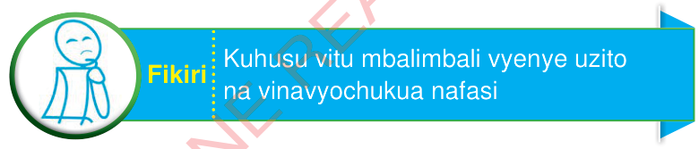

Sura ya Tatu
Maada
Utangulizi
Mazingira yanahusisha vitu vyenye uzito na vinavyochukua nafasi. Vitu hivyo huitwa maada. Katika sura hii, utajifunza hali za maada. Pia, utafanya majaribio sahili ya kuchunguza hali zake. Umahiri utakaoujenga utakuwezesha kutumia maada mbalimbali katika maisha ya kila siku.

Fikiri:Kuhusu vitu mbalimbali vyenye uzito na vinavyochukua nafasi
Dhana ya maada
Maada ni kitu chochote chenye uzito na kinachochukua nafasi. Mfano wa maada ni kama vile jiwe, maji na hewa.
Kazi ya kufanya namba 1
1.
Tumia maktaba, matini mtandao au vyanzo vingine kutafuta taarifa kuhusu dhana ya maada. kisha toa mifano mingine ya maada.
2.
Kusanya vitu mbalimbali, chunguza sifa zake, na uviweke kwenye makundi kulingana na hali za maada kama vile yabisi, kimiminika na gesi.